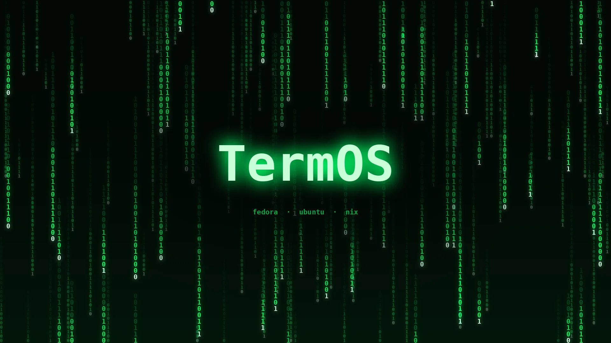
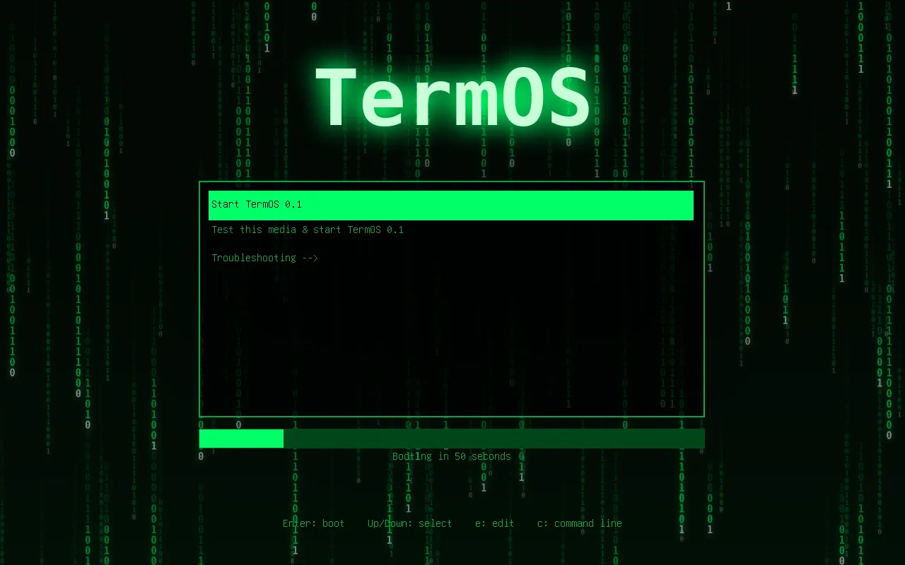
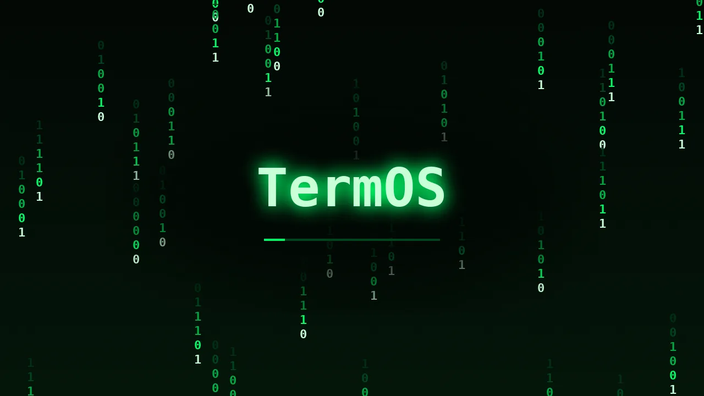
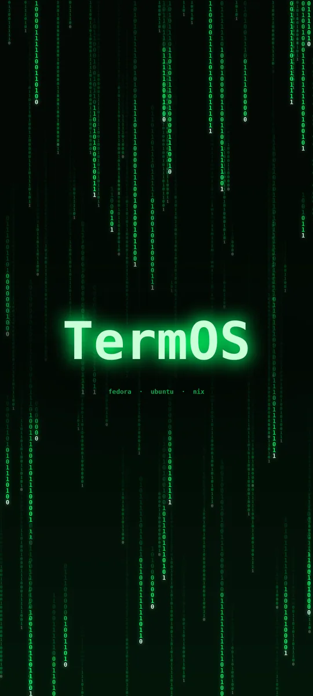

Three distros, one system
TermOS is built on Fedora, with Ubuntu and Nix layered on top. You get Fedora's fresh, stable base and the software from all three. (The name doesn't mean anything. It's not a terminal OS; TermOS is just a cool name.)
Fedora 45
The kernel, dnf and RPM packages, systemd, SELinux and Btrfs. Fedora's release cycle keeps things current without breaking them.
Ubuntu
Friendly defaults, and Ubuntu's software: .deb packages install into an Ubuntu container with Distrobox and run like native apps.
Nix
Nix runs alongside dnf for reproducible per-user setups, and gives you the huge nixpkgs collection. Try any package without installing it.
Run anything
termos-run works out what a program was built for and sends it to the right place. You just run it.
| App | How TermOS runs it |
|---|---|
Windows .exe / .msi | Wine, plus Bottles, Lutris and Proton for games |
macOS binaries and .app | Darling, or a Mac over SSH |
| BSD binaries | A BSD virtual machine, over SSH |
| Nix packages | nix run, with nothing installed for good |
Ubuntu .deb | The Ubuntu Distrobox container |
| Linux | Directly, of course |
$ termos-run notepad++.exe $ termos-run ./SomeTool.app $ termos-run ./freebsd-tool --help $ termos-run nix:cowsay moo _____ < moo > ----- \ ^__^ \ (oo)\_______ (__)\ )\/\ ||----w | || ||
BSD and macOS programs can't run on the Linux kernel by themselves, so TermOS uses Darling or a virtual machine for them. Darling is still experimental: command-line tools work best.
termos-fetch
System info with the TermOS Matrix logo, the way fastfetch and neofetch show it. Pipe fortune into it and TermOS turns into a termite, and every stat becomes a fortune.
$ termos-fetch 1 0 1 0 1 0 1 you@termos 0 1 1 0 1 1 0 1 1 0 1 ----------- 1 0 0 1 0 0 1 0 0 1 1 OS: TermOS 0.1 (Fedora Linux 45) 0 1 0 1 0 1 1 0 0 Kernel: Linux 6.19 1 0 1 1 0 1 1 0 0 1 0 Shell: bash 5.3 1 0 0 1 0 1 1 0 1 DE: KDE Plasma 0 0 1 1 0 1 0 0 1 1 Memory: 3.1 GiB / 16 GiB 1 1 0 1 0 1 1 0 1 0
$ fortune | termos-fetch \ / termite@TermOS \___/ ----------------- .-(o o)-. OS: You will be fortunate. / `-^-' \ Host: There is no spoon. /| (___) |\ Kernel: Beware of low-flying butterflies. / | ( ) | \ Uptime: The termite was here first. | (___) | CPU: Your lucky number is 0x1F. / ( ) \ Memory: You forgot something. ( )
Example output. Your stats (and fortunes) will differ.
The look
Green digital rain behind the TermOS logo, from the boot menu to the desktop.




The wallpaper comes in phone sizes too (1080×2400 and 1440×3200). Grab them from the repository.
Ready out of the box
Everything for running apps from anywhere is already on the ISO.
KDE Plasma
With the KDE apps, and Flatpak with Flathub ready to go.
Wine and friends
Wine with Mono, Gecko and DXVK, plus Winetricks, Bottles, Lutris and Protontricks.
Darling and VMs
Darling for macOS apps, and QEMU/KVM with virt-manager for a BSD virtual machine.
Distrobox and Nix
Distrobox and Podman for Ubuntu software, and Nix with its daemon enabled.
PCs, ARM boards and phones
One look, four editions. Pick the file for your hardware from the release.
PC
PCs and laptops, BIOS or UEFI, plus x86-64 boards like the Radxa X4. The full set: Windows, macOS, BSD, Ubuntu and Nix apps.
ARM64
ARM machines with UEFI: Snapdragon laptops, ARM servers and boards with UEFI firmware like the Radxa Dragon Q6A and Q8B (pick the Qualcomm boot entry). Everything except Windows and macOS apps.
ARM64 board
Write it to an SD card for a Raspberry Pi 3, 4 or 5, a Radxa ROCK Pi 4 or another U-Boot board. It asks for your user on first boot.
Phone
Nura (formerly postmarketOS) with Plasma Mobile and the TermOS look, for the OnePlus 6, Pixel 3a, PinePhone, Galaxy S9, Poco F1, several Redmi Notes and more.
iPhones can't run Linux (Apple locks the bootloader), and the Galaxy Z Fold has no Linux port. The full phone list is in phone/devices.txt; each phone's download has its own flashing steps.
Download and install
On a PC, TermOS is a live ISO: try it from a USB stick, then install it from the desktop. (Board and phone images are written straight to an SD card or the phone; see the README.)
-
Download
Get the files from the latest release. GitHub limits release files to 2 GiB, so a bigger ISO comes in parts. Download them all, plusSHA256SUMS, and join them:cat TermOS-0.1-x86_64.iso.part* > TermOS-0.1-x86_64.iso sha256sum --check --ignore-missing SHA256SUMS
-
Write it to a USB stick
Use Fedora Media Writer (Windows, macOS or Linux), orddon Linux. This erases the stick. -
Boot it
Restart from the USB stick and pick Start TermOS 0.1. You get a live KDE Plasma desktop to try everything out. -
Install
Double-click Install TermOS on the desktop. Fedora's installer, Anaconda, walks you through language, disks (encryption included) and your user account.
Prefer to build it yourself? Clone the repository and run make iso on Fedora, or make iso-container anywhere with Docker or Podman. The README has the details.